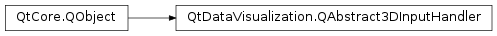

QtDataVisualization.QAbstract3DInputHandler¶
Inherited by: QtDataVisualization.Q3DInputHandler, QtDataVisualization.QTouch3DInputHandler
Synopsis¶
Functions¶
- def
inputPosition() - def
inputView() - def
prevDistance() - def
previousInputPos() - def
scene() - def
setInputPosition(position) - def
setInputView(inputView) - def
setPrevDistance(distance) - def
setPreviousInputPos(position) - def
setScene(scene)
Virtual functions¶
- def
mouseDoubleClickEvent(event) - def
mouseMoveEvent(event, mousePos) - def
mousePressEvent(event, mousePos) - def
mouseReleaseEvent(event, mousePos) - def
touchEvent(event) - def
wheelEvent(event)
Signals¶
- def
inputViewChanged(view) - def
positionChanged(position) - def
sceneChanged(scene)
Detailed Description¶
-
class
PySide2.QtDataVisualization.QtDataVisualization.QAbstract3DInputHandler([parent=nullptr])¶ Parameters: parent – PySide2.QtCore.QObject
-
PySide2.QtDataVisualization.QtDataVisualization.QAbstract3DInputHandler.InputView¶
-
PySide2.QtDataVisualization.QtDataVisualization.QAbstract3DInputHandler.inputPosition()¶ Return type: PySide2.QtCore.QPoint
-
PySide2.QtDataVisualization.QtDataVisualization.QAbstract3DInputHandler.inputView()¶ Return type: PySide2.QtDataVisualization.QtDataVisualization::QAbstract3DInputHandler.InputView
-
PySide2.QtDataVisualization.QtDataVisualization.QAbstract3DInputHandler.inputViewChanged(view)¶ Parameters: view – PySide2.QtDataVisualization.QtDataVisualization::QAbstract3DInputHandler.InputView
-
PySide2.QtDataVisualization.QtDataVisualization.QAbstract3DInputHandler.mouseDoubleClickEvent(event)¶ Parameters: event – PySide2.QtGui.QMouseEvent
-
PySide2.QtDataVisualization.QtDataVisualization.QAbstract3DInputHandler.mouseMoveEvent(event, mousePos)¶ Parameters: - event –
PySide2.QtGui.QMouseEvent - mousePos –
PySide2.QtCore.QPoint
- event –
-
PySide2.QtDataVisualization.QtDataVisualization.QAbstract3DInputHandler.mousePressEvent(event, mousePos)¶ Parameters: - event –
PySide2.QtGui.QMouseEvent - mousePos –
PySide2.QtCore.QPoint
- event –
-
PySide2.QtDataVisualization.QtDataVisualization.QAbstract3DInputHandler.mouseReleaseEvent(event, mousePos)¶ Parameters: - event –
PySide2.QtGui.QMouseEvent - mousePos –
PySide2.QtCore.QPoint
- event –
-
PySide2.QtDataVisualization.QtDataVisualization.QAbstract3DInputHandler.positionChanged(position)¶ Parameters: position – PySide2.QtCore.QPoint
-
PySide2.QtDataVisualization.QtDataVisualization.QAbstract3DInputHandler.prevDistance()¶ Return type: PySide2.QtCore.int
-
PySide2.QtDataVisualization.QtDataVisualization.QAbstract3DInputHandler.previousInputPos()¶ Return type: PySide2.QtCore.QPoint
-
PySide2.QtDataVisualization.QtDataVisualization.QAbstract3DInputHandler.scene()¶ Return type: PySide2.QtDataVisualization.QtDataVisualization::Q3DScene
-
PySide2.QtDataVisualization.QtDataVisualization.QAbstract3DInputHandler.sceneChanged(scene)¶ Parameters: scene – PySide2.QtDataVisualization.QtDataVisualization::Q3DScene
-
PySide2.QtDataVisualization.QtDataVisualization.QAbstract3DInputHandler.setInputPosition(position)¶ Parameters: position – PySide2.QtCore.QPoint
-
PySide2.QtDataVisualization.QtDataVisualization.QAbstract3DInputHandler.setInputView(inputView)¶ Parameters: inputView – PySide2.QtDataVisualization.QtDataVisualization::QAbstract3DInputHandler.InputView
-
PySide2.QtDataVisualization.QtDataVisualization.QAbstract3DInputHandler.setPrevDistance(distance)¶ Parameters: distance – PySide2.QtCore.int
-
PySide2.QtDataVisualization.QtDataVisualization.QAbstract3DInputHandler.setPreviousInputPos(position)¶ Parameters: position – PySide2.QtCore.QPoint
-
PySide2.QtDataVisualization.QtDataVisualization.QAbstract3DInputHandler.setScene(scene)¶ Parameters: scene – PySide2.QtDataVisualization.QtDataVisualization::Q3DScene
-
PySide2.QtDataVisualization.QtDataVisualization.QAbstract3DInputHandler.touchEvent(event)¶ Parameters: event – PySide2.QtGui.QTouchEvent
-
PySide2.QtDataVisualization.QtDataVisualization.QAbstract3DInputHandler.wheelEvent(event)¶ Parameters: event – PySide2.QtGui.QWheelEvent
© 2018 The Qt Company Ltd. Documentation contributions included herein are the copyrights of their respective owners. The documentation provided herein is licensed under the terms of the GNU Free Documentation License version 1.3 as published by the Free Software Foundation. Qt and respective logos are trademarks of The Qt Company Ltd. in Finland and/or other countries worldwide. All other trademarks are property of their respective owners.